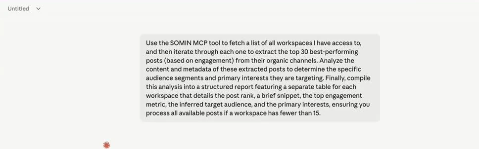
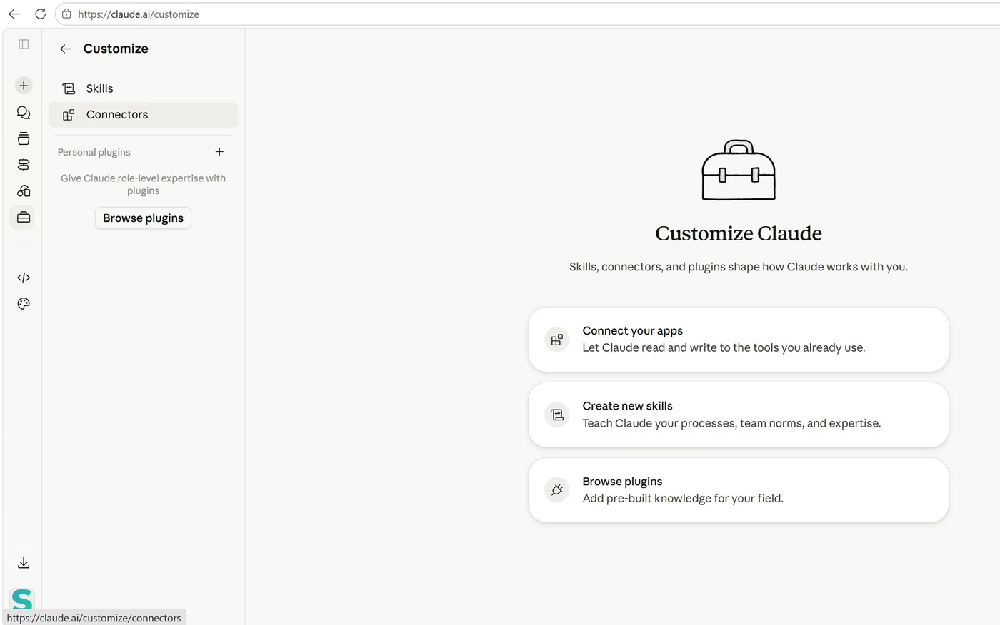
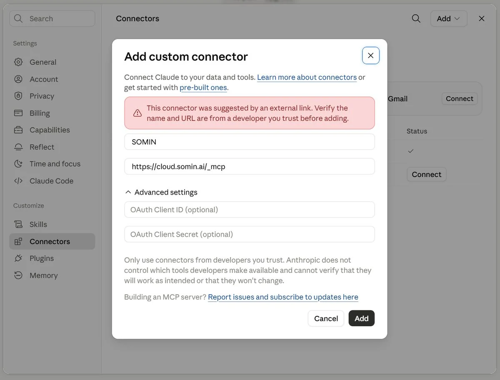
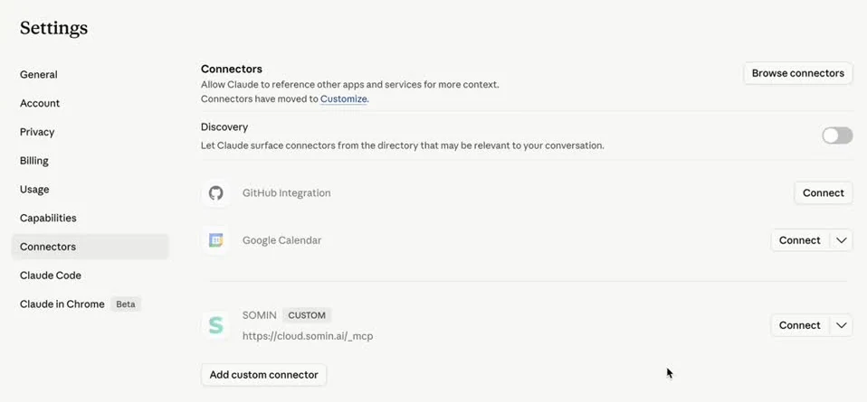

Take the agentic marketing team home
The workflow from Monday's room, packed as a plugin for Claude. Eight skills listen to your market, decode competitors, find the whitespace, make on-brand creative and ship a content calendar, all from your own SOMIN data.
- 8Main skills
- 26Skills in all
- 5Steps, one loop
- SGD 0Free to download
Shown live at The 2027 marketing team: smaller, faster, or obsolete? · Monday 12 October 2026 · WeWork @ Battery Road · See the talk
Technology partner SOMIN
Your download has started
Look for marketing-mondays.plugin in your downloads folder.
Download againUsing Claude Code? Get the .zip
The download didn't start. Use “Download again”, or write to ask@mondays.marketing.
- Sign in to SOMIN first at cloud.somin.ai, then to claude.ai.
- Upload the plugin: Customize › Plugins ↗ › Add › Upload plugin › marketing-mondays.plugin.
- Connect SOMIN: open the plugin, go to its Connectors tab, click Add if asked, then Connect.
- Test it: ask Claude which SOMIN workspaces it can see ↗
One loop, five steps
Every Monday we decode one real signal. The plugin runs the same loop on your own brand: listen, decode, decide, make, ship. Each step is a skill you can run on its own or chain into the next.
- 01
Listen
Track your brand and competitors week by week.
Pulse - 02
Decode
Find out who the content is for, what works and why.
Audience and contentInsight Engine - 03
Decide
Spot the whitespace and turn it into a strategy.
Landscape reportCompetitor productsDiversity score - 04
Make
Produce briefs, decks and on-brand creatives in Figma.
Brand deckFigma - 05
Ship
Put it on a calendar and schedule it in Postly.
Strategy to Postly
Ask in plain English, get a finished output
Pulse
A weekly social performance report with editions, a timeline and SOMIN insight chains.
“Make a Pulse for [brand] in my [workspace] workspace.”
/marketing-mondays:somin-pulse
Audience and content analysis
Keywords, share of voice, audiences, pain points and the competitor content that performs best.
“Using SOMIN, look at [workspace]: highlight keywords and show what competitor content works.”
/marketing-mondays:competitor-audience-content-analysis
Insight Engine dashboard
Persona, tension, angle and story chains, each backed by real posts.
“Build an Insight Engine dashboard for [brand]'s latest study.”
/marketing-mondays:somin-insight-engine-dashboard
Landscape report
One clickable landscape page: findings, brands, a recommendation and what to make.
“Build a landscape breakdown for [brand] and its competitors for last month.”
/marketing-mondays:somin-landscape-report
Competitor product and market insights
A multi-market dashboard of competitors' offers, discounts and product launches.
“Track what competitors launched in each of our markets this year.”
/marketing-mondays:competitor-product-market-insights
Content diversity score
Scores how varied a brand's creative is, from 0 to 100, against its competitors.
“How varied is [brand]'s creative compared with its competitors?”
/marketing-mondays:content-diversity-scorer
Brand deck
A strategy briefing deck: whitespace, trends, insights, calendar and creatives.
“Build a SOMIN briefing deck for [brand] in [market].”
/marketing-mondays:somin-brand-deck
Strategy to Postly
From strategy to scored creatives in your Figma file, a calendar, Postly scheduling and PDFs.
“Turn our SOMIN strategy into two weeks of posts and schedule them in Postly.”
/marketing-mondays:somin-strategy-to-postly
Plus 18 helper skills the main ones call for you, from persona and tension discovery to whitespace analysis, content calendars and deck QA.
Install the plugin in four steps
One file brings everything: the 26 skills and the SOMIN connector they read your data through. You need Claude (the desktop app or claude.ai) and a SOMIN account; Figma and Postly are optional.
- 1
Sign in: SOMIN first, then Claude
Sign in at cloud.somin.ai with the account whose workspaces Claude should see. Then open claude.ai or the Claude desktop app.
The golden rule: Claude links to whichever SOMIN account is signed in when you click Connect, so SOMIN always comes first.
- 2
Upload the plugin
Click Add › Upload plugin and choose marketing-mondays.plugin from your Downloads. It appears under your plugins, switched on. There is no separate skill library to download: the plugin already holds all 26 skills.
Haven't downloaded it yet? Get the plugin first.
- 3
Connect SOMIN from the plugin's page
Uploading a plugin doesn't sign you in to anything. Open Marketing Mondays in Customize › Plugins and select its Connectors tab. SOMIN shows one of three states:
- Not added: click Add, then Connect.
- Not connected: click Connect.
- Connected: you're done.
Connect links straight away with your signed-in SOMIN account; there is no extra approval screen. On a Team or Enterprise plan, if you can't add it yourself, ask your Claude Owner to add the SOMIN connector, then connect it with your own account.
- 4
Check it works, then run your first deck
Ask Claude which SOMIN workspaces it can see ↗. A list of workspace names within a few seconds means you are connected.
Then try the full workflow. Open Claude with this prompt filled in ↗, pick a workspace and a brand when Claude asks, and watch it build the deck:
I have SOMIN MCP connected. Give me a list of workspaces that I can work with, once I choose, give me a list of brands available in my workspace, once I choose the brand, then build a 12-month strategy deck for the one I pick. Use /somin-brand-deck for the full analysis and /somin-brand-guideline for SOMIN styling. Start with /scope-elicitation.

A SOMIN prompt running in Claude; Claude makes the SOMIN calls for you. You can also type / in the message box: the menu lists every skill with the plugin it came from.
No Connectors tab, or SOMIN won't connect from it? Add SOMIN as a custom connector instead
Use this route instead of step 3, not as well: two SOMIN connections give Claude the same tools twice.
Open the pre-filled “Add custom connector” dialog ↗
Or by hand: in Claude, open Customize › Connectors › Add custom connector. Fill in two fields, leave the OAuth fields under Advanced settings empty, and click Add. Then click Connect on the SOMIN entry tagged CUSTOM.
SOMINhttps://cloud.somin.ai/_mcpKeep the underscore: /_mcp, not /mcp.The pink “suggested by an external link” notice is normal with the pre-filled link. Check the name and URL, then click Add.



Stuck?
- No “Upload plugin” option: your organization controls which plugins members can add. Ask your Claude Owner to allow it, or to add the plugin for you.
- SOMIN shows “Not added” and you can't add it: on Team and Enterprise plans an Owner adds connectors. Ask them, or use the custom-connector route above.
- Connected the wrong SOMIN account: sign out and back in at cloud.somin.ai, then disconnect and connect SOMIN again from the plugin's Connectors tab.
- Claude doesn't use the skills: open the plugin in Customize › Plugins and check its toggle is on.
More detail on the SOMIN connection: SOMIN's Claude connection manual ↗ (skip its skill-library steps: the plugin already includes the skills). Questions: ask@mondays.marketing.
In Claude Code: a plugin added in the Claude app syncs to Claude Code signed in to the same account; run /reload-plugins. Or run claude --plugin-dir ./marketing-mondays.zip for one session. Then run /mcp, pick SOMIN and sign in. Skills appear as /marketing-mondays:<skill>.
Questions, answered
What is the Marketing Mondays plugin?
A free plugin for Claude that packs the agentic marketing workflow shown at Marketing Mondays on 12 October 2026. Its eight main skills and 18 helpers listen to your market, decode audiences and competitors, decide on whitespace, make briefs, decks and creatives, and ship a content calendar, all from your SOMIN data.
What do I need to use it?
Claude with plugins: the Claude desktop app, claude.ai or Claude Code. You also need a SOMIN account, because every skill reads your own data through the SOMIN connector. Figma and Postly connectors are optional, for the make and ship steps.
Does it cost anything?
The plugin is free to download. It runs inside your own Claude plan and on your own SOMIN account.
Can I use it in Claude Code?
Yes. Install it in the Claude app and run /reload-plugins in Claude Code signed in to the same account, or run claude --plugin-dir with the downloaded .zip for one session. Skills appear as /marketing-mondays:<skill>.
Where does my data go?
The skills read from your SOMIN workspace and hand the reports, decks and drafts back to you. The examples inside the skills are fictional, so your outputs use only your data. The details you give in the download form go to SOMIN, the technology partner of Marketing Mondays.
How do I get help with it?
Write to ask@mondays.marketing, or bring your question to the next Marketing Mondays room in Singapore.
Your Monday signal, on demand
Get the plugin, run it on your own brand, and bring what you find to the next room.